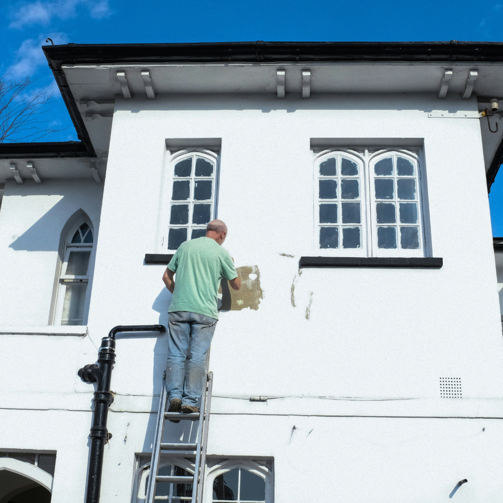
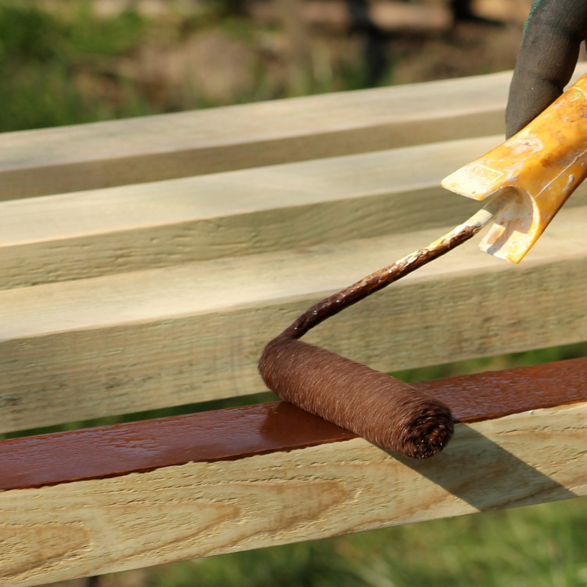

OBRAS
EXTERIOR/INTERIOR

Si deseas renovar tu hogar u oficina, tanto en interiores como en exteriores, te recomendamos nuestros servicios. Con amplia experiencia y profesionalismo, garantizan acabados impecables y duraderos utilizando las mejores marcas de pintura. Trabajamos de manera eficiente y puntual, asegurando que cada proyecto se complete a tiempo y con una atención meticulosa al detalle. Protegen tus muebles y superficies, dejando todo limpio y ordenado al finalizar. Para transformar tu espacio con resultados profesionales, contactanos hoy mismo para una consulta gratuita.
MADERAS
Si necesitas renovar o embellecer tus muebles y superficies de madera, te recomendamos los servicios de PintorPro. Con años de experiencia y un equipo de profesionales, garantizan resultados impecables y duraderos. Nos especializamos en restauración, acabado y personalización de todo tipo de trabajos en madera. Utilizamos materiales de alta calidad y técnicas avanzadas para asegurar que tus muebles y superficies luzcan como nuevos. El equipo trabaja de manera eficiente y puntual, cuidando cada detalle y protegiendo tu espacio. Ya sea que necesites restaurar un mueble antiguo, instalar molduras, o aplicar un nuevo acabado a tus superficies de madera, estamos aquí para ayudarte. Para transformar tus muebles y superficies de madera con resultados profesionales, contactanos hoy mismo para una consulta gratuita.
METALES
Si necesitas servicios de renovación o acabado de superficies metálicas, te recomendamos nuestros servicios . Con años de experiencia y un equipo de profesionales, garantizan resultados impecables y duraderos. Nos especializamos en la restauración, protección y personalización de todo tipo de metales. Utilizamos materiales de alta calidad y técnicas avanzadas para asegurar que tus superficies metálicas luzcan como nuevas. El equipo trabaja de manera eficiente y puntual, cuidando cada detalle y protegiendo tu espacio. Ya sea que necesites restaurar barandillas, rejas, muebles metálicos, o aplicar acabados protectores, estamos aquí para ayudarte.